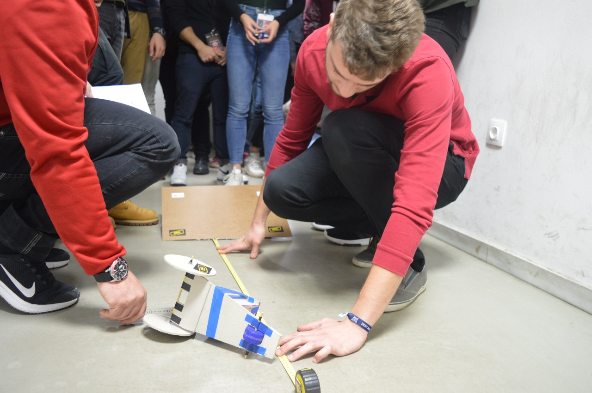

Πρόκειται για ένα event διάρκειας 10 ημερών, κατά τη διάρκεια του οποίου φιλοξενούνται στο Πανεπιστήμιο Πατρών 22 φοιτητές – μηχανικοί από όλη την Ευρώπη, ενώ παράλληλα συμμετέχουν και 8 – 10 φοιτητές του Πανεπιστημίου Πατρών.
Στο διάστημα αυτό διοργανώνονται κοινωνικές δραστηριότητες για τη σύσφιξη των σχέσεων μεταξύ των συμμετεχόντων αλλά και των διοργανωτών.
Για να δείτε τη λίστα με τα διαθέσιμα courses επισκεφτείτε αυτή τη σελίδα
Ο μεγαλύτερος διαγωνισμός μηχανικής που διοργανώνεται στην Ευρώπη από φοιτητές, για φοιτητές. Ομάδες 4 ατόμων που αποτελούνται από φοιτητές τεχνολογικών επιστημών, καλούνται να λύσουν ένα πρόβλημα μηχανικής φύσεως. Οι ομάδες μπορούν να διαγωνιστούν σε μία από τις εξής κατηγορίες: Innovative Challenge ή Design Challenge
Προσφέρεται ακόμα η ευκαιρία στους φοιτητές του Πανεπιστημίου Πατρών να επισκεφθούν τις εγκαταστάσεις κάποιων εκ των συνεργατών μας και να ανακαλύψουν πιθανές ευκαιρίες για πρακτικη άσκηση, καθώς και να δουν πως θα μοιάζει το μελλοντικό εργασιακό τους περιβάλλον.
Ακόμα με τη βοήθεια ειδικών στους τομείς της τεχνολογίας και της μηχανικής διοργανωνουμε workshops πάνω σε επίκαιρα θέματα που θα τους βοηθήσουν στην επαγγελματική τους σταδιοδρομία!